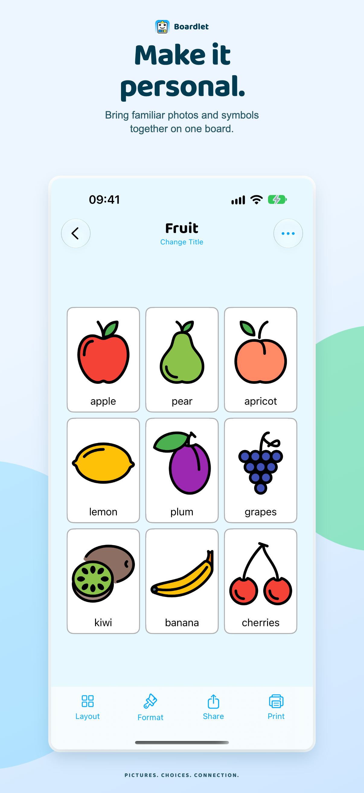
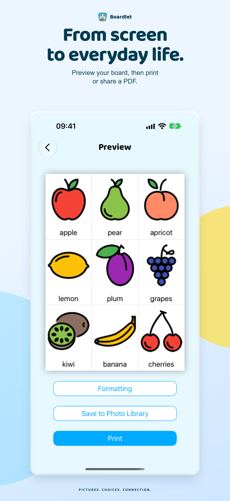
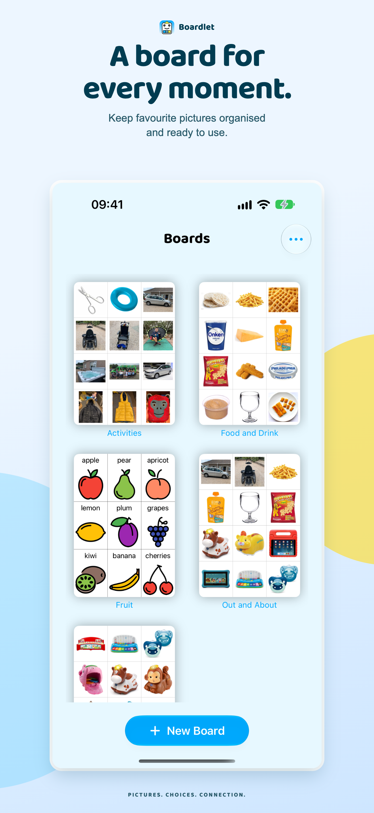
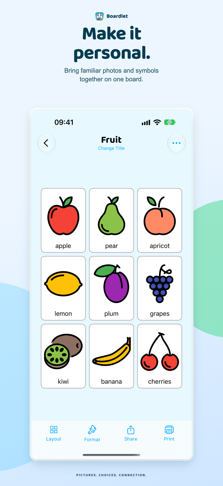
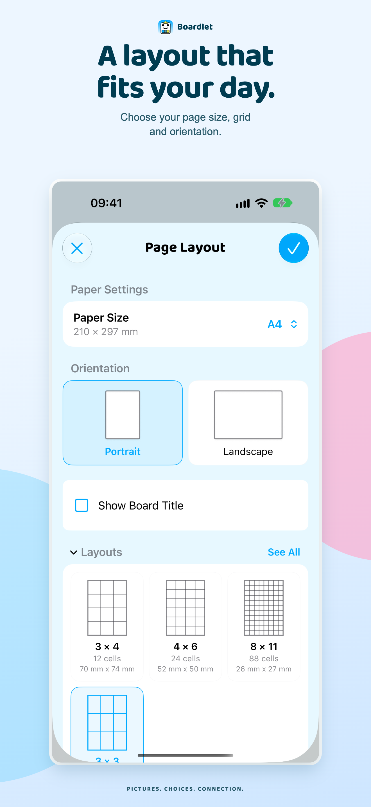
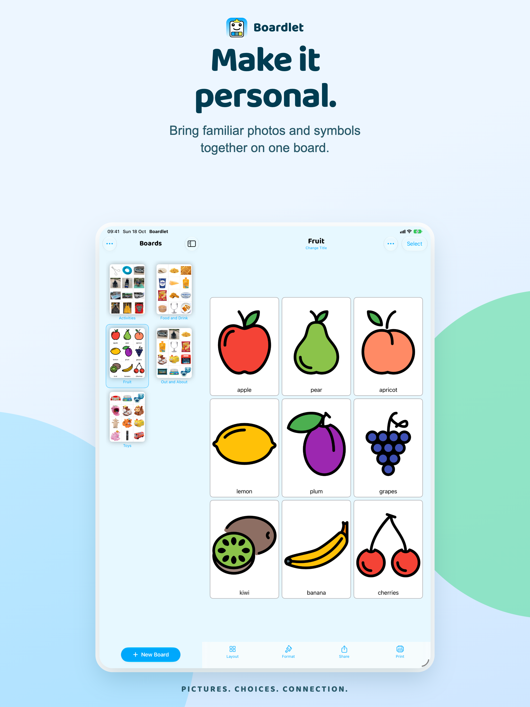
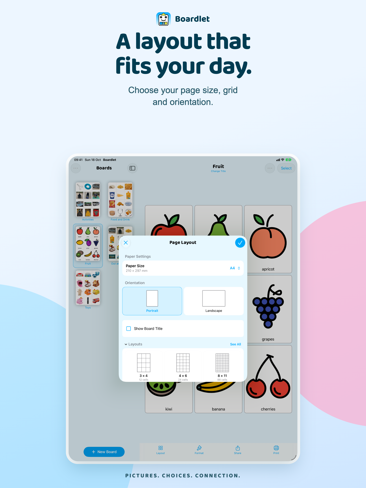
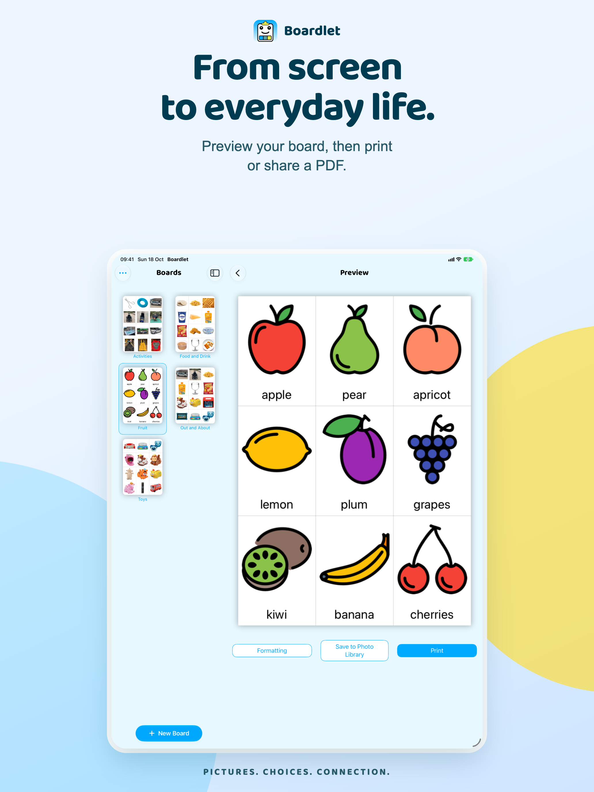

App Store screenshot artwork · English · 18 October 2026

Make it personal.A layout that fits your day.
From screen to everyday life.
A board for every moment.
Make it personal.
A layout that fits your day.From screen to everyday life.
Make it personal.
A layout that fits your day.
From screen to everyday life.